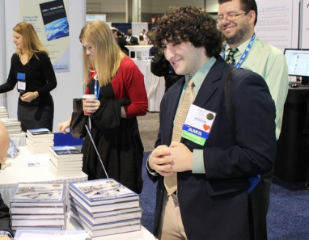

|  |
| Benefits of Publishing with AMS |
| ← Publications Home |
| Journal & BAMS Author's Guide |
| The Peer Review Process |
| Post-Acceptance Information |
| Journals & BAMS Author Resources |
Learn about Submitting to... |
OverviewMost AMS members speak a common scientific language by virtue of education, but their access to information is often limited by the specialized scientific jargon developed within specialties. BAMS aims to cut through this Babel of scientific “dialects,” thus making your article accessible to people outside the Society who may influence or sponsor your work, or benefit from your ideas. To make this possible, BAMS is edited for the readers’ sake. Authors need to translate their specialist’s understanding into general information and to persuade readers to read. Articles thus need to be sufficiently urgent, important, interesting, and/or rewarding for readers. Differences between BAMS and JournalsWhile publishing with BAMS is similar to the Journals, there are some minor but significant differences: -BAMS requires that an Author Proposal be submitted (to the web site) and then approved before a full manuscript will be considered.
What We PublishBAMS publishes -descriptions of field programs-descriptions of research and operational organizations/initiatives -reviews of scientific research -new findings, results, and theories of general interest -history of science -discussions of research priorities -discussions of scientific issues of general interest -discussions of trends/priorities in forecasting and other operational fields -educational issues -meeting/workshop summaries (see special guidelines below) -commentaries on issues of a wide variety BAMS also emphasizes -applications of scientific knowledge for public benefit
Send the Proposal FirstForm Follows Function: Article CategoriesLess Is More: Some Writing TipsFigure Information for BAMS AuthorsSend Your Manuscript Electronically
Returning authors: If you are certain you have already formatted your submission correctly, please go directly to the submission page. Prepare your Manuscript
Requirements to Enter Peer Review
Peer Review Process
Post-Acceptance
Articles intended as chapters in a Monograph are generally invited. Once an invitation has been accepted, the author should submit the completed article to the Editorial Manager website. As articles are submitted they will be assigned to an expert Volume Editor (selected by the Meteorological Monograph Series Chief Editor) and sent for peer review. The review process will emulate that used for journal contributions, keeping in mind the differences in purpose and value. Accepted articles will go immediately into production for electronic publication. FORMATTING GUIDELINESMonograph article or chapter elements may include an Abstract, Introduction, Body, Appendices, and References. Note: There should be consistency across all articles/chapters in the type and order of elements included, even if (as is often the case with a monograph) each chapter has a different author or authors. Section and subsection numbering should be consistent across all articles/chapters. The Organizer should provide guidance on this in the invitation. All manuscripts submitted must follow AMS journals style. Please refer to the Authors Guide for AMS Journals. If figures are taken from another source, authors must seek permissions from the copyright holder to reprint the material. Permissions must be forwarded to AMS, including the required acknowledgment, if applicable. If you are developing a book related to the atmospheric sciences and want to publish with the preeminent scientific society in the field, please consider AMS Books. Information on this page should help you decide if your idea coincides with our publishing intentions. If you find this is the case, please consider submitting a proposal according to our suggested proposal format, below. About AMS BooksAMS Books supports the AMS by disseminating unique content that advances science and scientific understanding and reaching varied audiences, from enthusiasts to scientists. We publish both non-technical and technical books for intelligent adult readers, covering topics such as: climate change, policy, economics, security, and the science behind the weather, as well as storm histories, biographies, and practical guides. Note we rarely publish textbooks (although, internally, our education department has developed courses and related text books) and we do not publish fiction or poetry. Volumes honoring specific individuals (festschriften) and conference volumes are published as monographs. Our monograph series are collected volumes of peer-reviewed articles (see instead our Monograph Submission Guidelines online at www.ametsoc.org/pubs). What AMS Books Can Do for YouOur reach is deep and broad. We have approximately 15,000 members who are exposed to our books through our website, newsletters, listservs, our monthly magazine, BAMS, and our online bookstore. Our books receive attention at scientific meetings, are reviewed in significant international publications, and win awards from both the world of science and the publishing industry. The University of Chicago Press markets and distributes our books to institutions and bookstores across the country, as well as to online retailers such as Amazon.com. Springer distributes our older titles in various eBook formats through Springer.com and the subscription-based SpringerLink, to which many key institutions subscribe. Starting in 2015, we will be populating our own online bookstore as well as the University of Chicago Press’s online bookstore will newer content in various eBook formats as well. The small size of the AMS Books list means authors receive individual attention, while our organizational reach allows us to tap world-class experts, and our publishing partners help us reach audiences beyond those who are already engaged in the weather, water, and climate community. Book Proposal FormatProposals must include the following: -Working title.
ContactPlease send your book proposal or direct any questions to: Sarah Jane Shangraw, AMS Books Managing Editor
What Happens to Your Proposal at AMSYour proposal will be evaluated by AMS Books staff, some of whom are not specialists in your area of expertise. We will evaluate the project’s feasibility by considering the significance of the content, our ability to market to the intended audience, the costs of producing the book in the appropriate format, and more. We will analyze existing similar titles and consult with experts in the subject area within our staff and leadership as needed before deciding whether to acquire a new title. We will contact you 2–4 weeks after receiving your proposal. Please contact us about your book or book idea today. |